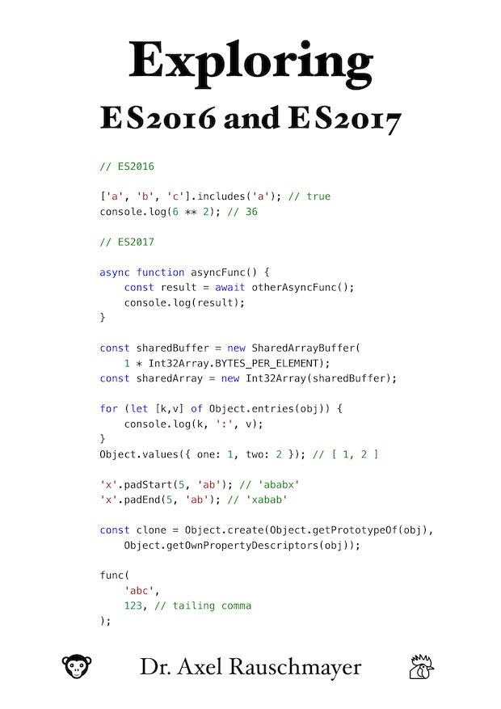

Exploring ES2016 and ES2017
Get the book
About the book
“Exploring ES2016 and ES2017”:
- Covers what’s new in ECMAScript 2016 and ECMAScript 2017.
- If you want to know more about the rest of JavaScript, consult Axel’s other books.
About the author
 Dr. Axel Rauschmayer specializes in JavaScript and web development. He blogs, writes books and teaches classes.
Dr. Axel Rauschmayer specializes in JavaScript and web development. He blogs, writes books and teaches classes.
Axel has been writing about the future of JavaScript since early 2011.
Support
Forum
I’ve created a Google Group where you can discuss questions and ideas related to “Exploring ES2016 and ES2017”.
Errata (errors, typos, etc.)
Praise for Axel’s books